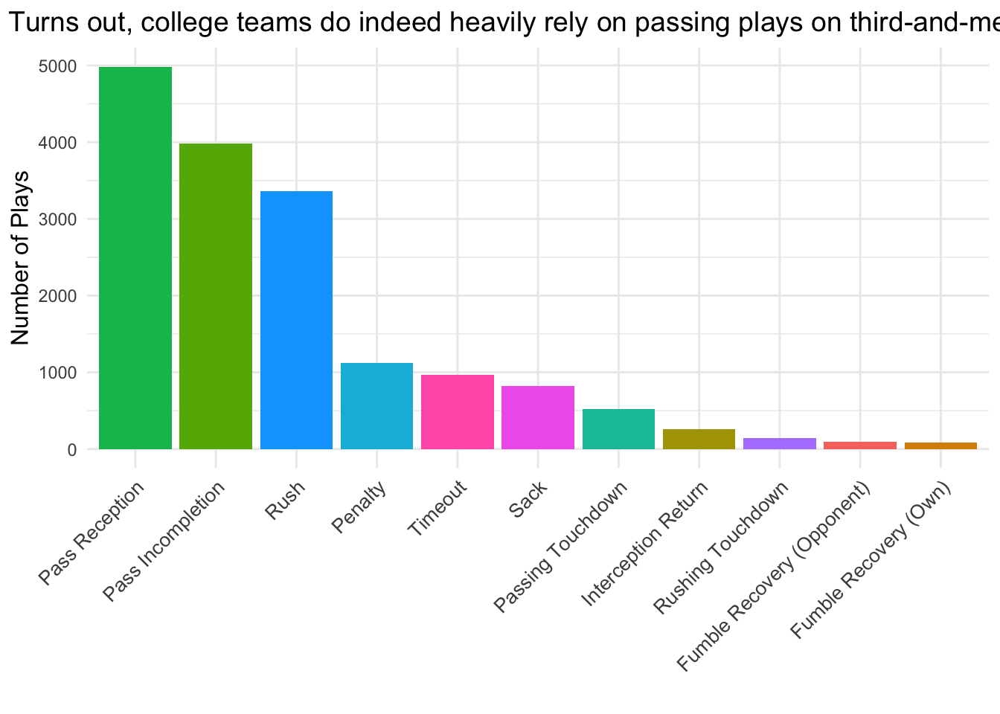
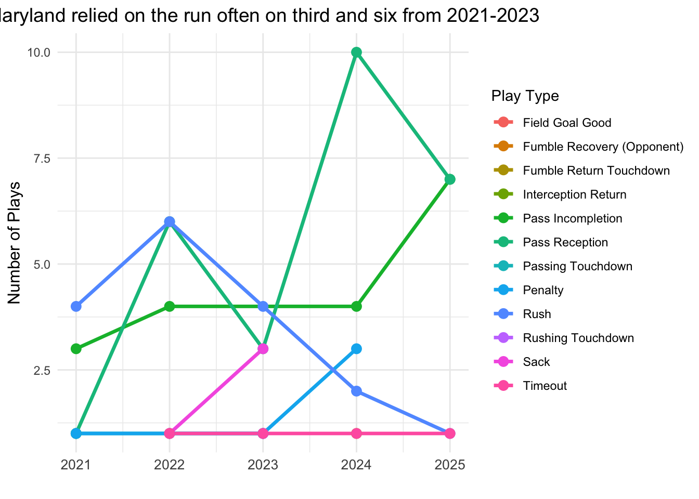

Is running the ball on third and medium distance dumb? It might not be fun, but it may well be justified.
Author
Matt Cohen
Published
October 9, 2025
Truly, with the amount of money that offensive coordinators get paid these days one might think that maybe, just maybe, they might be able to not get out of their own way on third downs. It seems like a near weekly occurrence than some play call is so mind mindbogglingly absurd that even a casual fan would be left confused.
Are offensive coordinators stupid? Are we stupid? Are we all stupid?
Here, we’re going to load in a dataset of every college football play before 2021 and 2025 and narrow it for specifically every third and six play to give a perfect medium distance that would leave an offensive coordinator with an actual choice to make. Let’s see what teams decided to do, and whether the person being made six-to-seven figures to call plays should keep doing it, or if it’s time to let the fan off his couch and into the booth.
Code
library(tidyverse)
── Attaching core tidyverse packages ──────────────────────── tidyverse 2.0.0 ──
✔ dplyr 1.1.4 ✔ readr 2.1.5
✔ forcats 1.0.0 ✔ stringr 1.5.2
✔ ggplot2 4.0.0 ✔ tibble 3.3.0
✔ lubridate 1.9.3 ✔ tidyr 1.3.1
✔ purrr 1.1.0
── Conflicts ────────────────────────────────────────── tidyverse_conflicts() ──
✖ dplyr::filter() masks stats::filter()
✖ dplyr::lag() masks stats::lag()
ℹ Use the conflicted package (<http://conflicted.r-lib.org/>) to force all conflicts to become errors
thirdandsix |>group_by(play_type) |>summarize(n =n()) |>arrange(desc(n)) |>filter(n >50) |>ggplot(aes(x =reorder(play_type, -n), y = n, fill = play_type)) +geom_col() +labs(title ="Turns out, college teams do indeed heavily rely on passing plays on third-and-medium",x ="",y ="Number of Plays") +theme_minimal() +theme(legend.position ="none",plot.title =element_text(hjust =0.5, size =14),axis.title.x =element_text(size =12),axis.title.y =element_text(size =12),axis.text.x =element_text(size =10, angle =45, hjust =1) )

By far, the most common play is a pass. Both completed passes and incomplete passes occur more frequently than rushes. That makes sense, third and six is a bit far for a running play. But that sure doesn’t stop offensive coordinators from calling them.
About 20% of all third and six plays since 2021 have been rushes. Running on third and six seems a little bit nuts. Does it work at all?
Well, that may explain why coordinators run the ball a noticeable amount on third and six! It does, occasionally, work. Teams average 5.7 yards gained when running the ball on this down and distance. That is, of course, less than six, but it is pretty close that running the ball may seem like a worth gamble. Especially given that there are more pass incompletions than rushing attempts at all, a rush may seem a little bit safer.
A run on third down may also be getting close to the first down maker in these situation because defenses aren’t expecting it and are more focused on defending the pass. That can leave open running lanes.
# A tibble: 289 × 2
pos_team rush_attempts
<chr> <int>
1 Army 44
2 Navy 39
3 Air Force 37
4 West Virginia 30
5 Baylor 29
6 New Mexico 29
7 UNLV 27
8 Michigan 24
9 Ole Miss 24
10 Florida State 23
# ℹ 279 more rows
Well well well, if it isn’t the service academies. Throughout the entire dataset regardless of it being third down or any down, Army, Navy and Air Force run the ball far more than any other team. So it makes quite a bit of sense to see these three teams at the top of the culprits running the ball on third down.
But it is interesting to see some teams that have become known for throwing the ball (ahem, Ole Miss) this far up the list. There are a group of schools at the bottom of this list that have run the ball on third and six just once. These are our favorite schools, a group of courageous ball knowers that like to have fun. We’re talking about you: Bentley, Bowie State (maryland schools!), Brown (fun nerds!), Bryant, Georgetown College Kentucky, Kentucky Christian, Laurinburg, Michigan Tech, Morehouse, New Haven, North Central College (pick a direction!), North Greenville, Post, Robert Morris, Shorter, Taylor (indiana schools!), Texas Wesleyan, Thomas More, Upper Iowa, Virginia State, Virginia U of Lynchburg (is that not just Liberty?), Webber U.
Now the fun part (load groan): What is Maryland up to in this dataset?
Over the course of the whole data set, Maryland’s play distribution basically lines up with the rest of the sport. Maryland certainly had a majority of passing plays, and its percentage of running plays relative to its total plays run is about the same 20% as the national average.
And now let’s see how those numbers have changed year to year.
Code
thirdandsix |>filter(pos_team =="Maryland") |>group_by(year, play_type) |>summarize(n =n()) |>arrange(year) |>ggplot(aes(x = year, y = n, color = play_type, group = play_type)) +geom_line(size =1.2) +geom_point(size =3) +labs(title ="Maryland relied on the run often on third and six from 2021-2023",x ="",y ="Number of Plays",color ="Play Type" ) +theme_minimal() +theme(plot.title =element_text(hjust =0.5, size =14),axis.title.x =element_text(size =12),axis.title.y =element_text(size =12),axis.text.x =element_text(size =10) )
`summarise()` has grouped output by 'year'. You can override using the
`.groups` argument.
Warning: Using `size` aesthetic for lines was deprecated in ggplot2 3.4.0.
ℹ Please use `linewidth` instead.

While Maryland’s overall numbers are about in line with the national average, it has fluctuated a lot to get there. In 2021, 2022 AND 2023, Maryland ran the ball on third and six either just as much or more than any other play type. While we know the run CAN work, that is WAY too much running relative to the success rate of running on third-and-medium. Maryland largely reversed course in 2024 and this year with passing completions either tied for or leading the way each year.
But, over the course of the whole data set, Maryland averaged 6.12 yards on third and six, which may be enough to justify a pretty cowardly scheme.
Maybe offensive coordinators do know what they are doing. Is running the ball on third and six fun? No, no it is not. But national averages show the running can get close enough to the first down marker to make it worth the attempt. And, depending on the field position, running also could set up a very manageable fourth down if it does come up a bit short.
As fans, we want to see the flashy play. Sometimes flashy isn’t necessary. Just because a team throws the ball doesn’t mean they are going to air it out past the first down marker. Nor does it mean a big passing play makes sense. Six yards is not insignificant, but it also isn’t a distance to freak out and drop half the playbook over. The data backs that up.